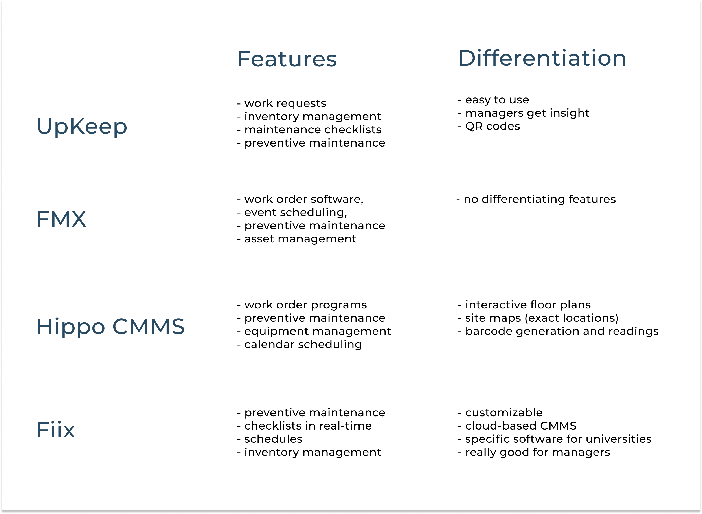
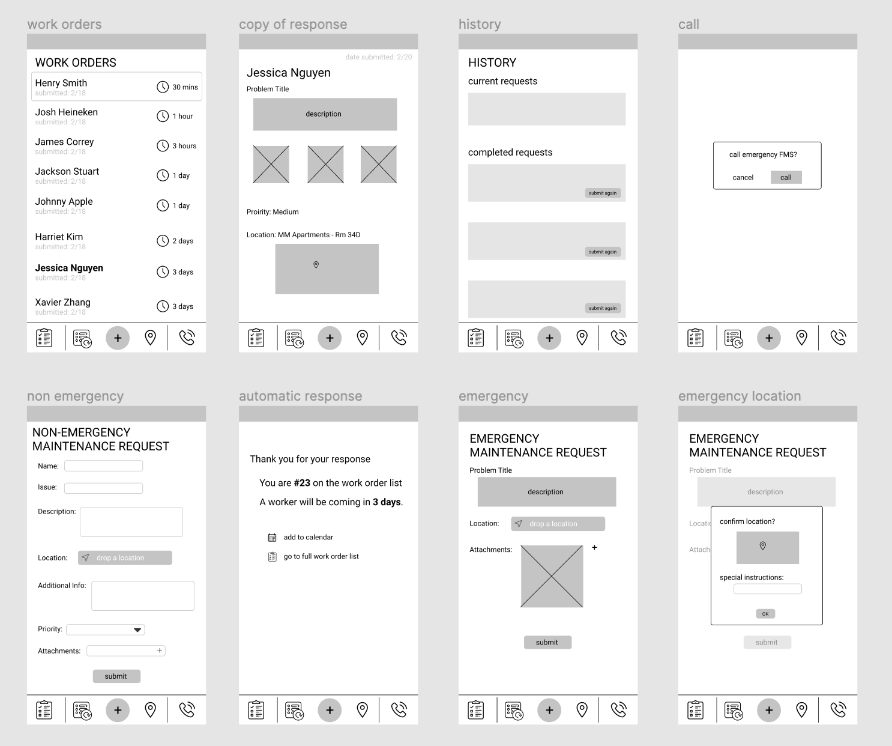
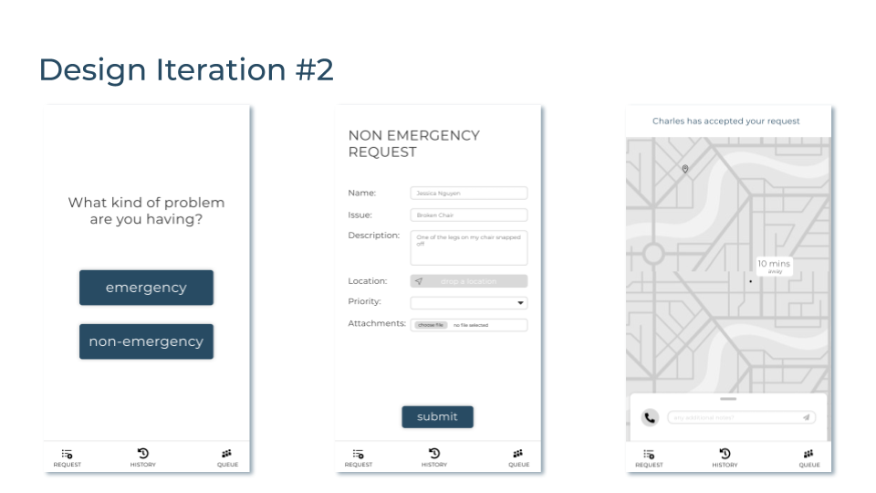
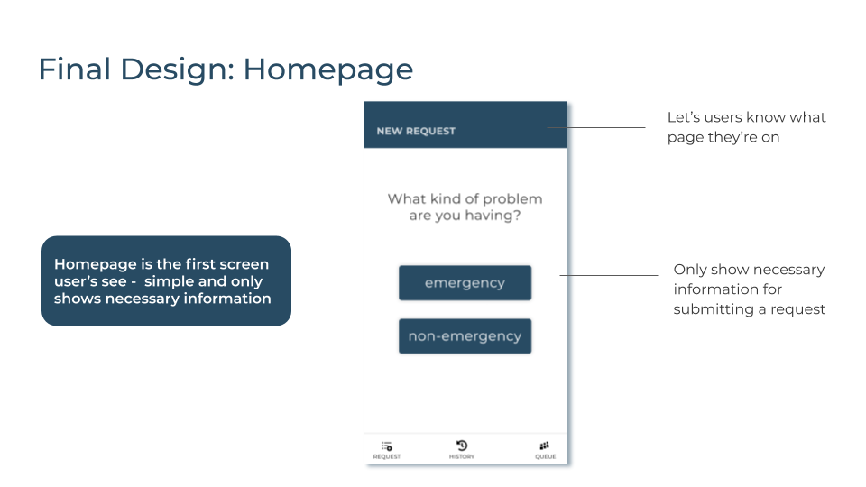
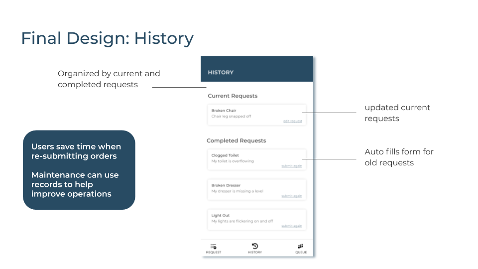
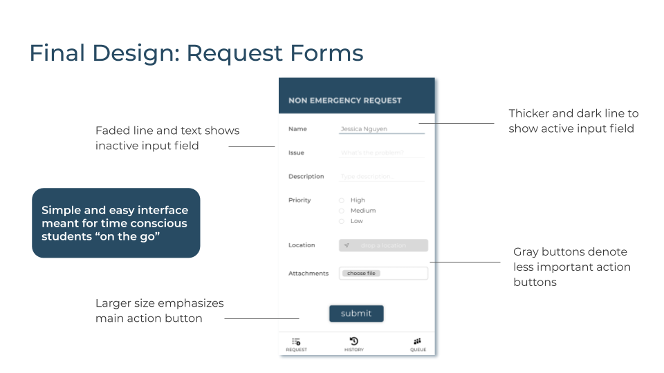
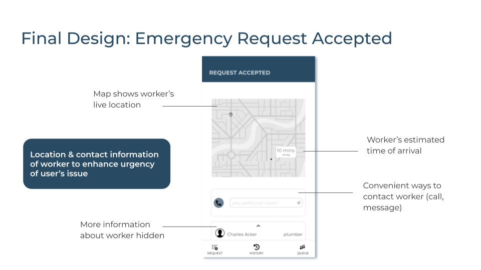

I was inspired to work on this personal project because I work at the Cohon University Center Information Desk, where my supervisors don't have the best communication with the Facilities Management Services on campus. Maintaining efficient communication is critical in running the University Center smoothly. My peers also seem to have similar problems with the maintenance request process. I thought this would be a fun and relevant project to take on.
I conducted primary and secondary research to get a better understand the scope of the problem I wanted to attack. After, I went to the drawing board - generated concepts, storyboarded, and sketched lo-fi wireframes. After much usability testing and design iterations, I came to a final design aimed to solve the problem of inefficient maintenance requests on my campus.
Campus facilities are not getting the immediate attention they need.
When campus facilities issues are not adequately taken care of in a timely manner, it affects a students’ experience.
Of all Universities today:
Through online research, I found that proper facilities management:

The most widely used softwares:
But...
I wanted to have a clear understanding of how students and maintenance workers feel about the maintenance request process. I wanted to answer these questions:
I conducted 7 total user interviews - 4 students, 2 staff members, and 1 Facilities Management Services manager.
I grouped notes from my user interviews into overarching insights:

I came out of the user interviews with a lot of different directions on how I could proceed, so I decided to narrow down my research insights to focus the solution.
With my research insights in mind, I sat down and generated as many solutions as I could think of. I spent 3 minues on each insight:

I storyboarded my top 4 concepts and got user feedback from 20 people to see which concepts I should move forward with.
When getting user feedback, questions I considered were:
Concept 1: Contacting the Closest Worker

Users liked immediacy and convenience of a mobile app
Concept 2: Integrating Multiple Platforms

Users did not like this and would not use it
Concept 3: Request Using Photos/Location

Users like the concept, but for indoor facilities
Concept 4: Making Work Orders Public

Users liked this because it would reduce anxiety and uncertainty
A mobile app that makes the experience of submitting personal maintenance requests fast and convenient by focusing on transparency, accuracy, and effective communication.
Platform: Mobile apps are convenient and easy to use because students are already familiar with them
Purpose: Mainly for personal issues because students have less interest in reporting issues for public facilities


I implemented feedback from iteration #1 usability testing, added color, and made design changes.

After 3 rounds of design iteration and usability testing a total of 20 people... I finally arrived at the final design!




I prototyped the final design using Invision.